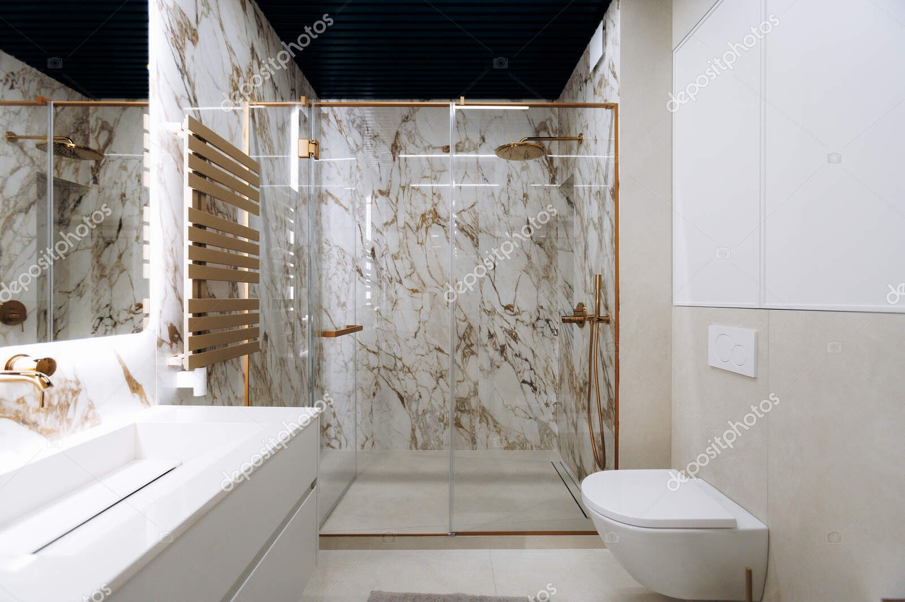

Residential Glass Services
A shower door that won't close properly, cracked patio door glass, or a staircase that needs new glass railings. These are just a few of the projects we handle for Colorado homeowners. Our residential services cover glass repairs, replacements, and new installations, including shower enclosures, interior glass doors, patio doors, and balcony railings.
Explore Residential Glass